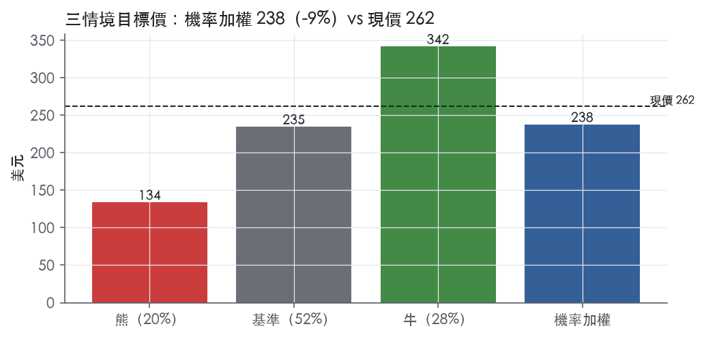
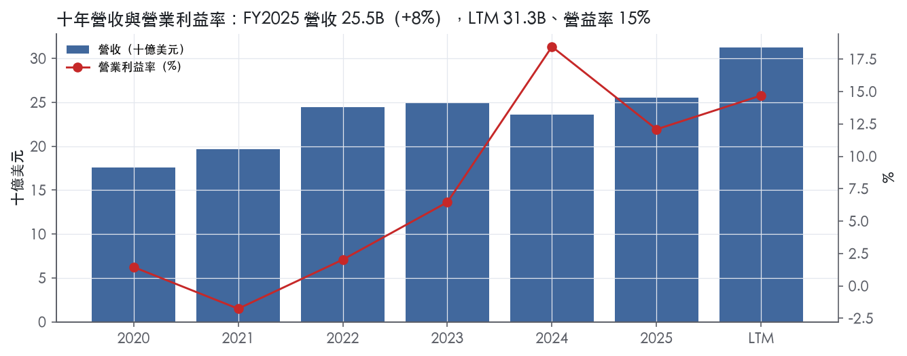
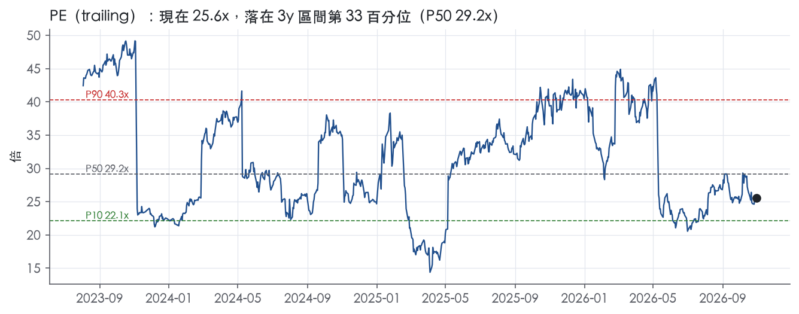
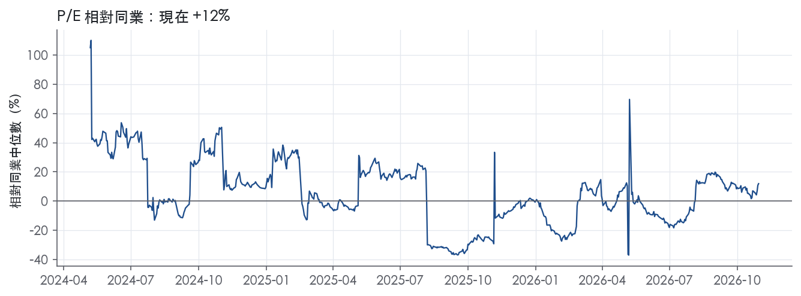
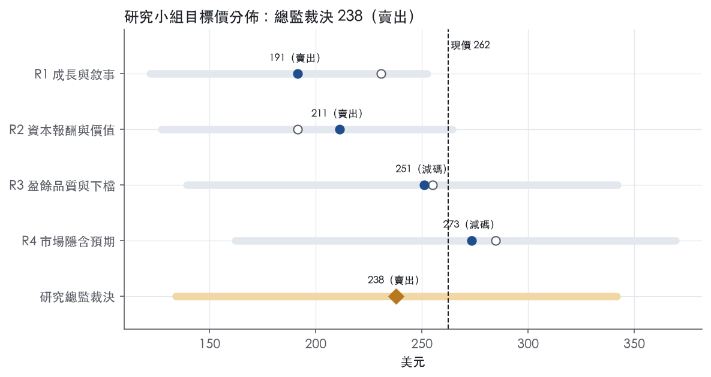
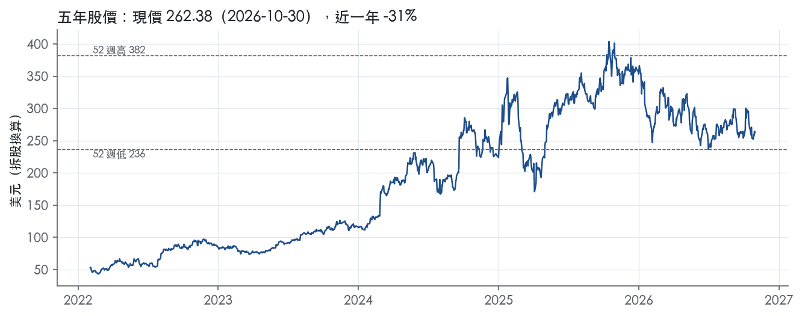

評等總表 › 公用事業 › CEG
併表成長一次性、新債利息未入模，相對減碼｜評等 賣出｜目標價 238
| 評等 | 賣出 |
| 12 個月目標價 | 238 美元 |
| 現價 | 262.38 美元（2026-10-30） |
| 預期報酬 | 股價 -9.4%＋股息 0.6%＝總報酬 -8.7%；同業籃門檻 10.0%，超額 -18.7% |
| 估值方法 | P/E 26.0x，套在第 5–8 季的EPS（也就是一年後的未來四季） |
| 三情境 | 熊 134／基準 235／牛 342 |
| 研究流程 | 四位研究員兩輪辯論＋研究總監裁決 |
| 資料來源 | SEC EDGAR XBRL、Tiingo、FRED（全免費） |
併表成長一次性、新債利息未入模，相對減碼（研究總監裁決，四位研究員兩輪辯論後）
評等 賣出｜12 個月目標價 238 美元（總監三情境機率加權 245 與研究員中位數 231 各半）｜現價 262.38（2026-10-30）
預期報酬：股價 -9.4%＋股息 0.6%＝總報酬 -8.7%。同業籃門檻 10.0%，超額 -18.7%。
估值方法：P/E 26.0x，套在第 5–8 季的EPS（也就是一年後的未來四季）。三情境：熊 134（20%）／基準 235（52%）／牛 342（28%）。
什麼會讓研究總監改變看法：FY2027Q1 營收不低於 11.12B、或 FERC 共置備案保留經濟性且 2027 調整後 EPS 指引下緣高於 13.50，我會把 y1 與倍數向市場持平 29.4x 靠、轉中性；ERCOT 商譽減損或容量拍賣價格大幅回落，熊機率上調、轉更空。
| 過去四季（實際，FY2026Q2） | 未來四季 | 第 5–8 季 | 第 9–12 季 | |
|---|---|---|---|---|
| 營收（B） | 31.3B | 33.8B | 35.5B | 37.6B |
| 營收成長 | 26.0% | 8.0% | 5.0% | 6.0% |
| 營業利益率 | 14.7% | 13.7% | 15.3% | 15.9% |
| EPS（美元） | 10.26 | 7.47 | 9.03 | 10.10 |
| EPS 成長 | 7.1% | -27.1% | 20.8% | 11.9% |
| 每股股息（美元） | 0.47 | 0.47 | 0.47 | 0.47 |
| P/E（現價） | 25.6x | 35.1x | 29.1x | 26.0x |
| 股息殖利率（現價） | 0.6% | 0.2% | 0.2% | 0.2% |
過去四季為申報數字；預測為研究總監的假設、程式計算。倍數與殖利率都用現價計算，用來看現價對應各期獲利的高低。
| 情境 | 機率（歷史） | 故事 | 未來四季營收成長 | 第 5–8 季營益率 | 倍數 | 目標價 | 股價漲跌 |
|---|---|---|---|---|---|---|---|
| 熊 | 20%（17%） | 風險表第 2 條：PJM 容量價格自 2025 高基期回落、FERC 共置合規備案不利；疊加第 3 條 Calpine 整合超支或 ERCOT 商譽減損；PTC 回補使營益率跌幅有限並逐年回升 | 4.0% | 13.0% | 20.0x | 134 | -48.9% |
| 基準 | 52%（54%） | Calpine 併表成長在 FY2027Q1 退場、新債全年利息與收購合約攤銷壓住 GAAP 盈餘、920 MW 長約 2029 年後才供電，倍數小幅低於市場持平 | 8.0% | 15.3% | 26.0x | 235 | -10.5% |
| 牛 | 28%（29%） | FY2027Q1 對 11.12B 持平以上、PJM 容量價格維持高檔、FERC 備案保留共置經濟性、Crane 2027 重啟，GAAP 營益率回到 FY2024 18.5% 上限附近（已扣新債利息），倍數貼實現帶 P90 | 16.0% | 16.8% | 30.0x | 342 | 30.3% |
目標價由程式依研究總監的驅動與倍數計算；機率由研究總監給定。括號內是歷史頻率：把這檔股票過去十年 12 個月報酬的波動形狀，置中在基準情境，結果落在各情境附近的比例。

四位研究員用不同方法各自估值，回應研究總監的質疑後交出第二輪，最後由總監逐點裁決。各研究員的主張見第七章，裁決理由見第八章，完整論證見《研究底稿》。
| 立場（一輪→二輪） | 加權目標價（一輪→二輪） | 評等（一輪→二輪） | 第二輪倍數 | 熊～牛目標價 | |
|---|---|---|---|---|---|
| R1 成長與敘事 | 看空→看空 | 231→191 | 賣出→賣出 | 25.0x | 122～252 |
| R2 資本報酬與價值 | 看空→看空 | 191→211 | 賣出→賣出 | 24.0x | 127～264 |
| R3 盈餘品質與下檔 | 中性→看空 | 255→251 | 減碼→減碼 | 27.0x | 139～342 |
| R4 市場隱含預期 | 中性→中性 | 285→273 | 中立→減碼 | 26.0x | 162～369 |
| 研究總監裁決 | 看空 | 238 | 賣出 | 26.0x | 134～342 |
目標價由程式依各自的驅動與倍數計算；評等＝機率加權總報酬 − 同業籃門檻。
Constellation Energy 是全美最大的民營發電商，也是全美最大的核能發電公司，同時經營具競爭力的零售售電業務，服務約250萬個客戶帳戶，其中包含80%的《財星》100大企業¹。公司旗下發電組合涵蓋核能、天然氣、石油、地熱、水力、風力與太陽能，總裝機容量達55 GW，發電能力可供應相當於2,700萬戶家庭用電，佔全美潔淨能源供給約10%¹。公司本質上是「核能基載 + 零售售電避險」雙引擎模式：核能機組提供低成本、免排放的基載電力，零售端用來為發電產出避險並創造終端客戶關係。2026年1月完成收購Calpine後，公司的資產基礎進一步擴大至地熱、天然氣尖峰機組與電池儲能，業務型態從純核能電力公司轉型為更多元的綜合發電平台。
公司未在本次引用的10-K段落中揭露詳細的分部營收占比數字，10-K未揭露。從原文風險因子可見，公司約70%的發電資產（含直接持有與長期合約取得的容量）位於PJM市場範圍內²。核能業務是公司資產負債表上最大的固定資產類別，核能機組的容量因子、換燃料停機天數、燃料成本直接牽動公司損益²。公司持有依《普萊斯-安德森法》規定的最高核責任險，每個營運場址5.00億美元，超額部分透過強制參與的產業互助保險池承保，單一事故理賠上限為16.3B美元，超過此上限美國國會可能對核能產業課徵額外的籌款措施²。天然氣、石油與水力機組方面，公司以「等效強迫停機率」（EFOF）作為2026年起新納入的關鍵營運指標，反映Calpine併入後機組組合的擴大³。地熱資產（The Geysers）來自Calpine收購，租約年期多為5至20年，部分租約已逾30年仍在運作，聯邦租約初始年期10年可展延至最長50年，公司預期視需要展延但部分租約可能無法展延或條件轉差²。零售售電業務則在各州市場與其他供應商競爭，毛利率與銷售量受州立法、天然氣與電力價格波動影響²。FY2025全年營收25.53B美元，較FY2024成長8.3%（dv.成長.FY2025），FY2026上半年因Calpine併入與市場條件轉佳，單季營收明顯放大，FY2026Q1營收11.12B美元、年增63.8%，FY2026Q2營收7.50B美元、年增23.0%。
公司零售客戶群以大型企業與機構為主，服務80%的《財星》100大企業，顯示其通路以直接簽訂長期售電合約（PPA）及企業用電協議為主軸，而非單純零售小額用戶¹。地區分布高度集中於PJM市場（約70%的發電資產），其餘分布在ERCOT（德州）及西部地區（含Calpine的地熱與電池儲能資產）²。近期公司明顯鎖定資料中心與AI運算需求帶來的用電成長，已與包括Walmart等多家投資等級客戶簽署新增920 MW的長期PPA，合約年期15至20年，將於2029年至2032年間陸續開始供電，其中與Walmart的176 MW協議將支持Dresden Clean Energy Center新增30 MW產能¹。另外與CyrusOne簽訂380 MW協議，在德州Freestone縣的Freestone Energy Center旁連接並供電給新建資料中心，並取得第二階段再增380 MW的獨家供電協議，PUCT已核准該資料中心的淨計量申請³。公司將跨境金融市場曝險揭露為：截至2025年12月31日，公司可用信用額度中約26%來自歐洲銀行、8%來自加拿大銀行、13%來自亞洲銀行²。
FY2025Q3營收6.57B美元，年增僅0.3%，營益率16.5%、淨利0.93B美元（dv.營益率.FY2025Q3）。FY2025Q4營收6.07B美元、年增12.9%，但營益率降至9.8%、淨利0.43B美元，反映當季利潤率承壓（dv.營益率.FY2025Q4）。FY2026Q1因Calpine於2026年1月併入，營收跳升至11.12B美元、年增63.8%，GAAP每股淨利4.49美元（高於去年同期0.38美元），調整後營業每股盈餘2.74美元（高於去年同期2.14美元），公司當時重申全年調整後營業每股盈餘指引11.00–12.00美元³。FY2026Q2營收7.50B美元、年增23.0%，GAAP每股淨利降至1.42美元（去年同期2.67美元），但調整後營業每股盈餘升至2.55美元（去年同期1.91美元），公司將全年調整後營業每股盈餘指引上修至11.50–12.50美元¹。FY2026Q2調整後營業利益成長主要反映Calpine併入及市場與組合條件轉佳，部分被不利的核能機組停機抵銷¹。同一季公司並與LS Power簽約出售Brazos Valley Energy Center（原Jack A. Fusco Energy Center，ERCOT地區606 MW天然氣廠），作價860M美元（扣除交割調整前），這是Calpine收購案監管承諾下的最後一筆資產出售，交易待DOJ核准，預計年底前完成交割¹。核能面，Crane Clean Energy Center的重啟取得關鍵進展：FERC批准將Eddystone 3、4號機的容量併網權轉移至Crane，NRC也核准該廠的燃料執照修正案，公司預計2027年重啟運轉¹。公司並就紐約州Ginna Clean Energy Center及Nine Mile Point 1號機提出延役申請，擬延長運轉至2049年¹。
公司將資料經濟（data economy）帶動的用電需求列為核心成長引擎，表示近期受惠於資料中心、AI及其他高效能運算應用帶動的發電需求成長，並已與科技公司簽訂多筆長期合約，客戶對未來合約的興趣也在增加²。公司明確表示會持續在既有業務與市場中追求成長，並在整個競爭性能源價值鏈中尋求進一步多元化，包括機會性的零排放能源收購、透過核能升級（uprate）、可再生能源重整（repowering）、電池儲能、天然氣與CCUS新增產能、客戶用電共置（co-location）、擴大客戶永續方案等方式從既有機組組合創造新價值²。CEO Dominguez表示公司正「推進Crane Clean Energy Center重啟、與企業客戶執行長期協議、延長兩座紐約關鍵機組壽命」，藉此強化美國能源基礎設施、滿足持續成長的可靠電力需求¹。CFO Shane Smith表示第二季結果與上修的全年EPS指引，體現了「擴大後平台的獲利能力、強勁的營運與商業表現，以及資本配置策略的嚴謹執行」，公司將持續聚焦整合Calpine、擷取擴大後機組組合的價值，並投資能創造具吸引力回報的機會¹。整體而言，Calpine併購案把CEG從純核能電力公司轉成「核能基載+天然氣尖峰+地熱+零售售電」的多元平台，資料中心／AI用電需求是公司目前對外溝通中最具體的新增量來源，但FY2026上半年淨負債已隨併購跳升至24.00B美元、EV/EBITDA來到14.2x（接近五年中位數），顯示市場對併購後整合執行與去槓桿路徑仍在觀察。公司調整後每股盈餘指引連續兩季上修（Q1維持11.00–12.00美元、Q2上修至11.50–12.50美元），顯示管理層對Calpine併表後的獲利能見度信心提升，但GAAP每股淨利同期反而因公允價值調整、攤銷等非現金項目而下滑，顯示GAAP與調整後盈餘的落差正在擴大，投資人需留意此差距。核能重啟（Crane）與延役（紐約兩座機組）進度是檢驗公司「核能複興」敘事能否兌現的關鍵里程碑，目前仍處於監管審批階段，尚未反映在財報數字中。

CEG 目前不具備經濟護城河。既有核能機組確實有成本優勢，但公司在批發電力市場是價格接受者。ROIC 十年平均 9.3%，低於資本成本代理值 10.0%，我們沒有把握未來 5 年 ROIC 能穩定高於資本成本。趨勢判為變寬，理由是業務概況章所述與資料中心及企業客戶簽訂的長期 PPA，正把部分商品價格曝險轉為合約收益。若合約化比例持續提高，且 ROIC 連續數年站上資本成本，評級可上調至窄。
成本優勢是 CEG 唯一站得住的來源，核心是既有核能機組的低邊際成本。10-K 指出，核能容量因子下降時須改用天然氣與燃油機組發電，或向市場購電，「These sources generally have higher costs to produce energy relative to our nuclear stations」²。在電價由邊際燃氣機組決定的市場中，這代表核能機組能賺到結構性價差。但價差大小由市場決定，不由公司決定：部分時段供給超過需求時會出現負電價，造成核能等基載電廠的營收損失²。
無形資產（執照與資源租約）構成進入門檻，但不構成定價權。核電廠受 NRC 執照與法規約束，法規或執照變動可能要求大幅增加資本支出，或提高營運與除役成本²。水力機組的營運執照須由 FERC 核發²。Geysers 地熱蒸汽田以租賃取得，聯邦租約初始 10 年，可展延至最長 50 年²。新建核電極難複製，因此既有機組在零碳基載電力上具稀缺性。同一套監管也可能反向壓縮利潤：若公司不再符合 FERC 市場定價授權的測試，將只能以成本基礎費率售電²。
不列轉換成本。 10-K 自承，在低氣價、低波動時期，零售競爭者會積極搶市占，因為「the barriers to entry can be low」²。網路效應與效率規模均無證據，不列。
數字不支持護城河主張，這是我們評為「無」而非「窄」的主因。
政策是最大風險。PTC 的期間、金額甚至存在本身都可能受立法影響，且財政部與 IRS 的後續指引可能減少公司實際取得的利益²。
市場設計是第二個風險。約 70% 的發電資源位於 PJM²。價格上限、要求新大型負載向新電源取得供電等規則，可能導致既有資源提前退役²。
技術進步會削弱核能的稀缺性。核能、CCUS、儲能與先進地熱的進步，可能大幅增加潔淨基載電力供給並壓低市場價格²。
長約保護並非永久。PPA 到期後，新合約或短期市場的價格可能顯著低於原 PPA²。若公司排放優勢相關法規未能生效，低排放帶來的潛在競爭優勢也可能縮小²。
目標倍數相對同業應持平，不給溢價。核能成本優勢讓 CEG 在電價高檔時賺得比同業多，但 ROIC 平均未超過資本成本、利潤率波動大。估值時不應假設超額報酬期超過 5 年，終值應以 ROIC 收斂至資本成本處理。目前 EV/EBITDA 14.3x，與五年中位數 14.3x 相當，市場尚未給予護城河溢價，我們也不建議給。
| 指標 | 最新 | 十年平均 | 標準差 | 最低 | 最高 |
|---|---|---|---|---|---|
| ROIC | 10.6% | 9.3% | 6.3% | 1.8% | 18.8% |
| 營業利益率 | 12.1% | 6.5% | 6.9% | -1.8% | 18.5% |
| FCF 利潤率 | 5.0% | -14.0% | 11.3% | -31.0% | 5.0% |
| ROE | 16.8% | 11.9% | 12.3% | -1.6% | 31.1% |
程式計算。資本成本代理值（10 年債＋5%）：10.0%；ROIC 平均減資本成本：-0.7%；ROIC 有資料的 4 年中，高於資本成本 2 年。
LTM 營業現金流／淨利為 1.21x，盈餘有現金支撐，但自由現金流／淨利僅 0.09x 且近三年平均為負 1.85x，顯示扣掉資本支出後盈餘所剩無幾。應計比率 LTM 為 -0.8%，不是靠應計堆出來的盈餘，這點是正面訊號。真正的變數是 2026 年 1 月 Calpine 併購後淨負債與利息負擔明顯上升，槓桿從低位轉為中性偏高。
LTM 營業現金流／淨利 1.21x 落在綠燈區，十年平均更高達 3.35x，長期而言現金是跟得上盈餘的【判，量化底稿】。但近三年平均營業現金流／淨利為 -0.70x，顯示 FY2022–FY2024 這段公司經歷過現金流為負、淨利卻為正的落差期【判，量化底稿】。自由現金流端更嚴峻：LTM FCF／淨利僅 0.09x，紅燈，近三年平均 -1.85x，十年平均卻有 5.13x，顯示近年資本支出（FY2025 資本支出／營收 11.5%）大幅侵蝕自由現金流【判，資料包年度表】。季度數字也印證：FY2026Q1 CFO 0.42B、FCF -0.85B，FY2026Q2 CFO 1.13B、FCF -0.12B（資料包近八季表），併購後自由現金流持續為負。
公司以「Adjusted (non-GAAP) Operating Earnings」取代 GAAP 淨利作為溝通指標，2026 年第二季 GAAP 稀釋每股淨利 1.42 美元，調整後為每股 2.55 美元，差距主要來自六項加回¹：
我的判斷：公允價值調整與除役相關活動屬於會計口徑造成的非現金波動，加回合理；商品合約攤銷是收購會計產生的非現金項目，也可以理解為非經常性。但 Calpine 併購與整合成本雖然公司列為非經常性，實質上是為了完成一筆大型收購所付出的真實現金支出，且公司自己也說「可能超出預期、繼續產生額外整合成本」¹，這塊不應該完全視為一次性，估值時建議只打折加回、不要 100% 剔除。法律與環境負債變動屬於公用事業／核能業常態性風險的一部分，不是真正的一次性項目，加回時要保留一定懷疑。
淨負債／EBITDA LTM 2.90x，黃燈，遠高於近三年平均 1.29x 與十年平均 1.49x，主因是 2026 年 1 月 Calpine 併購後總債務從 FY2025Q4 的 8.99B 跳升至 FY2026Q1 的 22.47B、FY2026Q2 維持在 24.70B（資料包近八季表），現金同期僅 0.70–0.80B，淨負債達 24.00B【判，資料包】。利息保障倍數 LTM 5.87x 黃燈，低於綠燈門檻 8.00x，但高於十年平均 3.32x，顯示付息能力雖未達最佳水準，仍優於公司長期歷史水位【判，量化底稿】。稀釋股數年變動 LTM +1.7%，黃燈，主因是為完成 Calpine 併購新發行 5000 萬股給 Calpine 股東，交易後原股東持股比例降至約 86%、原 Calpine 股東約 14%⁴，這是併購對價稀釋，非經常性資本操作，可解釋。股利加回購占淨利 LTM 15.9%，黃燈，遠低於近三年平均 53.5%，公司在新聞稿中也提示未來股利維持現行政策但董事會保留隨時調整的權利⁴，資本配置彈性尚存但力道在併購後明顯收斂。公司另於 2026 年 8 月同意以 8.60 億美元出售 Brazos Valley Energy Center（606 MW 天然氣電廠），作為滿足 Calpine 併購監管承諾的最後一筆資產出售¹，交易完成後將回收部分現金、緩解槓桿。
自由現金流／淨利紅燈（LTM 0.09x，近三年平均 -1.85x）：真問題，但部分可用併購時點解釋，不是完全假警報。資料包顯示 FY2026Q1 資本支出推升、CFO 僅 0.42B，加上 Calpine 併購相關現金流出，使 LTM FCF 僅 0.31B，對比 LTM 淨利基礎明顯偏低【判，資料包快照】。公司在 MD&A 中提到「我們的業務是資本密集型，需要對發電設施進行大量投資」且修復 Crane 核電廠是「複雜的工程，包括在關鍵時程內採購或恢復專用零件」⁴，說明資本支出高峰與併購整合是結構性、非單純盈餘灌水造成的現金缺口，但這也意味著在 Crane 重啟、Calpine 整合完成前，自由現金流難以回到十年平均水準，估值不能假設它很快反轉。
淨負債／EBITDA 黃燈（2.90x）、利息保障黃燈（5.87x）：真實但可解釋的槓桿上升，源自 2026 年 1 月 Calpine 收購的融資，屬於一次性跳升而非盈餘品質惡化【判，資料包】。
稀釋股數變動黃燈（+1.7%）：可解釋，為收購對價發股而非持續性股權稀釋融資，公司已明確說明發股規模與比例⁴。
應收帳款成長減營收成長黃燈（+6.4pp，FY2025）：程式標黃但原文未提供可直接佐證的解釋，無法在本次節錄中找到對應敘述，視為待觀察項目，不排除零售電力/天然氣業務信用風險擴大所致——MD&A 提及「零售銷售使我們面臨 C&I 公司、政府實體及住宅客戶的信用風險」⁴，這可能部分解釋應收帳款成長快於營收，但無法完全排除是口徑性或季節性因素。
估值應以 GAAP 淨利為主要錨點，非 GAAP 調整後每股盈餘（$2.55）只能部分採信：公允價值與除役相關調整可全額接受，但 Calpine 整合成本與法律環境負債變動應打折加回，不宜視為純粹一次性。鑑於自由現金流／淨利持續低於門檻且槓桿升至 2.90x 黃燈區，估值倍數應較歷史中位數（EV/EBITDA 5 年 P50 14.3x）打折，不宜套用擴張倍數，待 Calpine 整合成本收斂、Crane 重啟後自由現金流回升再重新評估。
| 項目 | LTM | 近三年 | 十年 | 燈號 | 規則 |
|---|---|---|---|---|---|
| 營業現金流／淨利 | 1.21x | -0.70x | 3.35x | 綠 | ≥1.00x 綠、<0.80x 紅 |
| 自由現金流／淨利 | 0.09x | -1.85x | 5.13x | 紅 | ≥0.90x 綠、<0.60x 紅 |
| 應計比率（(淨利−CFO)／平均總資產） | -0.8% | 7.6% | 6.8% | 綠 | ≤0.0% 綠、>5.0% 紅 |
| SBC／營收 | — | 1.2% | 0.7% | 綠 | ≤3.0% 綠、>8.0% 紅 |
| 淨負債／EBITDA | 2.90x | 1.29x | 1.49x | 黃 | ≤1.50x 綠、>3.00x 紅 |
| 利息保障倍數（營業利益／利息） | 5.87x | 6.13x | 3.32x | 黃 | ≥8.00x 綠、<3.00x 紅 |
| 稀釋股數年變動 | 1.7% | -1.5% | -1.5% | 黃 | ≤0.0% 綠、>3.0% 紅 |
| （股利＋回購）／淨利 | 15.9% | 53.5% | 11.2% | 黃 | ≥50.0% 綠、<0.0% 紅 |
| 應收帳款成長 − 營收成長（FY2025） | +6.4pp | — | — | 黃 | ≤5pp 綠、>15pp 紅 |
| 存貨成長 − 營收成長（FY2025） | +0.2pp | — | — | 綠 | ≤5pp 綠、>15pp 紅 |
程式計算；燈號以 LTM（無則近三年平均）判定。
| 風險 | 觸發指標（看什麼數字、在哪裡看） | 對 EPS 的影響方向與粗略幅度 | 未來 12 個月發生機率（高／中／低） | 出處 |
|---|---|---|---|---|
| 核能PTC隨電價走高而退場（phase-out） | 季報MD&A「Nuclear PTC revenue」逐季揭露金額；PJM West／ComEd／New York day-ahead電價 | 方向：負（大）。2025年核能PTC營收年減1,760M美元，年減84.6% | 高 | 10-K 年報 FY2025 Item 7（管理層討論與分析） |
| PJM容量市場規則改革／FERC show cause後續裁決 | FERC對PJM的合規備案結果（2026年）、各區容量拍賣結果（EMAAC、ComEd $/MW-day） | 方向：雙向，幅度大。2025年EMAAC容量價格年增246.5%、ComEd年增445.2%，意味反向下修風險同樣劇烈 | 中 | 10-K 年報 FY2025 Item 7（管理層討論與分析） |
| Calpine整合執行與資產負債表槓桿 | 淨負債水準、EV/EBITDA倍數、年度商誉減損測試結果 | 方向：負（大）。淨負債自5.35B跳升至24.00B美元，EV/EBITDA 14.2x | 中 | 量化底稿（band.ev_ebitda）＋⁴ |
| 商品避險公允價值未實現損益波動 | 季報調節表「Unrealized (Gain) Loss on Fair Value Adjustments」稅後金額 | 方向：雙向，幅度中。2025年稅後709M美元（每股2.26美元）不利，2024年稅後1,026M美元（每股3.25美元）有利 | 高 | 10-K 年報 FY2025 Item 7（管理層討論與分析） |
| 核能除役義務（ARO）假設調整 | 年度除役成本研究更新、CARFR折現率變動公告 | 方向：負（中～大）。成本膨脹率調升50bp影響ARO達2,175M美元；折現率調降50bp影響125M美元 | 低 | 10-K 年報 FY2025 Item 7（管理層討論與分析） |
核能PTC隨電價走高而退場，是目前最確定、也最大的逆風。 公司揭露核能PTC是「可轉讓credit，隨年度毛收入在每MWh 26.00至44.75美元區間遞減」的機制⁴。2025年公司核能PTC營收僅320M美元，較2024年的2,080M美元大減1,760M美元、降幅84.6%⁴，主因是PJM West、ComEd、New York等地區電價與容量價格全面走高，把核能機組的毛收入推出PTC補貼區間⁴。這條風險的特性是「電價越漲、PTC越少」，所以它會部分抵銷電價上漲帶來的營收利益，監測時要同時看電價與PTC揭露金額，不能只看電價單邊上漲當利多。
PJM容量市場規則改革是第二大風險，因為容量收入波動幅度本身就很大。 2025年EMAAC容量價格年增246.5%、ComEd年增445.2%，是公司2025年Midwest與Mid-Atlantic營收成長的主要貢獻來源⁴。但國家能源優勢委員會（National Energy Dominance Council）已要求PJM就可靠度與定價提出關稅修正案，內容包括「新建發電容量的保障收入機制」、「向資料中心等共置負載分攤成本」等⁴；FERC同時已在2025年12月裁定PJM現行關稅不公平不合理，要求PJM就共置負載的計費與輸電服務重新提出合規備案，相關費率與條件要到2026年才會定案⁴。公司自己也承認「這是新興議題，關稅修正尚未定案，有可能影響公司機組未來的收入」⁴。由於容量收入基數已經很高，任何下修都是從高點回落，EPS影響方向可能由正轉負，且公司無法控制時程。
Calpine整合與槓桿風險排第三，因為它改變了公司的資本結構與估值基礎。 2026年1月以約22B美元收購Calpine後，公司淨負債從FY2025的5.35B美元跳升至24.00B美元，EV/EBITDA來到14.2x，接近五年期中位數（＝14.3x）。公司在10-K中明確提示「Calpine收購預期將為資產負債表增加大量商誉，未來將依公司政策進行減損測試」⁴，而商誉目前主要掛在ERCOT分部，Calpine的天然氣與地熱資產多落在這個分部內⁴。公司2025年已認列97M美元（每股0.31美元）的併購相關費用，且多數不可抵稅⁴。整合不順或商品價格環境轉弱若觸發減損，將直接衝擊帳面淨值與市場對估值倍數的信心。
商品避險公允價值未實現損益波動排第四，因為它是每季都會出現、但方向不可預測的雜訊項。 公司2025年GAAP淨利較2024年減少1,430M美元，其中「不利的經濟避險未實現損失淨額」與「股權投資未實現損失增加」是主要原因之一⁴。2025年此項調整稅後金額為709M美元不利（每股2.26美元），2024年則為1,026M美元有利（每股3.25美元）⁴，顯示GAAP EPS與公司慣用的調整後營業EPS之間的落差，很大一部分來自這個不可控的會計項目，投資人若只看GAAP EPS單季波動容易誤判基本面。
核能除役義務（ARO）假設調整排第五，機率低但單次衝擊可以很大。 截至2025年底，公司核能除役AROs為12.9B美元⁴，公司揭露的敏感度分析顯示：除役成本膨脹率統一上調50個基點，AROs將增加2,175M美元；折現率（CARFR）調降50個基點，AROs增加125M美元；若將DOE接收乏燃料的假設時點延後至2045年，AROs則減少75M美元⁴。這類調整通常是每五年一次的除役成本研究更新所觸發，短期內發生機率低，但由於金額已經接近公司LTM EBITDA的四分之一規模（＝8.27B美元），一旦觸發會對資產負債表造成明顯衝擊。
Calpine併購後淨負債一次性跳升至24.00B美元，是在聯邦基金利率3.75%、美國十年期公債殖利率4.98%的環境下完成的，公司10-K並未就這筆新增債務的再融資成本敏感度提供具體數字，但利率維持高位將直接侵蝕未來利息費用，值得每季盯緊總債務與利息支出的變化。
公司調整後營業EPS指引連續兩季上修（2026年5月指引11.00–12.50美元、8月上修至11.50–12.50美元¹），但同期GAAP每股淨利反而從2.67美元降至1.42美元（FY2026Q2），GAAP與Adjusted EPS的缺口持續擴大，公司並未在風險因子中揭露這個缺口本身的擴大趨勢，但這是判斷管理層盈餘品質敘事是否可信的關鍵觀察點。
現價 262.38 對應 trailing（過去四季）P/E 25.6x、EV/EBITDA 14.2x、EV/EBITA 25.4x、EV/Sales 3.7x、FCF 殖利率 0.3%。主要估值倍數 P/E 現在 25.6x，落在3 年區間第 33 百分位（P10／P50／P90 = 22.1x／29.2x／40.3x）。

把程式的機械基準預測放到現價下，市場付的前瞻倍數是：P/E（未來四季） 29.4x、P/E（第 5–8 季） 26.9x。反推 DCF 顯示市價隱含未來五年營收年成長 17.8%（WACC 9.0%、終值成長 3.0%、FCF 利潤率 9.6%，SBC 不加回）。
| 倍數 | 現在 | 3 年 P10 | 3 年 P50 | 3 年 P90 | 現在分位 | 全期 P50 |
|---|---|---|---|---|---|---|
| P/E | 25.6x | 22.1x | 29.2x | 40.3x | 32.7% | 30.8x |
| EV/EBITDA | 14.3x | 11.3x | 15.3x | 18.4x | 36.1% | 14.3x |
| EV/EBITA | 25.6x | 22.7x | 28.1x | 34.2x | 30.1% | 29.2x |
| EV/EBIT | 25.8x | 22.8x | 28.6x | 34.4x | 30.1% | 30.0x |
| EV/Sales | 3.8x | 1.9x | 3.8x | 4.5x | 50.3% | 3.0x |
| P/S | 3.0x | 1.6x | 3.2x | 4.3x | 40.4% | 2.8x |
| P/FCF | 305.7x | — | — | — | — | 79.4x |
trailing 倍數（股價 ÷ 過去四季）；分位以每個交易日計算。
同業籃：VST, NRG, TLN, NEE（手動名單（playbooks/peers.yaml））。評等門檻 10.0%：同業「倍數不變下持有一年」的隱含報酬中位數（＝ FCF 殖利率 ×(1＋g)＋g，g 為 5 年營收年複合成長並夾在 −2%～8%），每家夾在 0～15%、P/E 低於 5 倍視為資料可疑而排除，中位數再限制在 10 年債到 10 年債＋5% 之間（同業原始中位數 11.5%）。
| 代號 | 市值 | 5 年營收 CAGR | 營益率 | ROIC | P/E | 5 年 P/E 中位數 | EV/EBITDA | P/FCF | 隱含報酬 |
|---|---|---|---|---|---|---|---|---|---|
| CEG | 93.1B | 7.7% | 14.7% | 10.6% | 25.6x | — | 14.2x | 301.4x | 8.1% |
| VST | 46.5B | 9.2% | 18.5% | 7.3% | 22.9x | — | 12.1x | 20.6x | 13.2% |
| NRG | 20.2B | 27.6% | 6.1% | 10.9% | 24.9x | — | 11.8x | 58.1x | 9.9% |
| TLN | 16.4B | -8.6% | 2.6% | -1.6% | — | — | 61.7x | 28.9x | 1.4% |
| NEE | 174.6B | 8.7% | 31.7% | 6.0% | 21.2x | 25.3x | 18.3x | — | 13.1% |
| 同業中位數 | 8.9% | 12.3% | 6.6% | 22.9x | 25.3x | 15.2x | 28.9x | 10.0% |
全部 trailing，程式以各公司 SEC XBRL 與 Tiingo 行情計算；第一列為本檔。
P/E 相對同業中位數：現在 11.9%，過去 1 年平均 -2.2%、3 年 5.3%、5 年 —；EV/EBITDA 相對同業中位數：現在 -6.1%，過去 1 年平均 -9.2%、3 年 0.0%、5 年 -13.1%。

事後實現前瞻倍數帶（P/E，2022-05-20..2025-08-14）：P10／P50／P90 = 10.4x／18.3x／31.0x。它是每個交易日的股價除以之後四季實際實現的指標；一年後，今天的第 5–8 季正是那時的未來四季，所以這條帶是 12 個月目標價的同口徑倍數。因為用的是事後實際而非當時預期，過去成長超乎預期的公司這條帶會偏低。
程式的機械基準（成長率從過去四季年增率三年收斂到 6%、利潤率持平）用 事後實現前瞻 P/E P50 估值得到 178（-32.0%），市場現行前瞻倍數（現價 ÷ 基準 未來四季指標）一年後持平，套在基準 第 5–8 季指標得到 287。這兩個數字只是參考點，不是本報告的目標價；研究員對這個定價的回應在第七章。
下表是每位研究員第一輪（各自獨立）與第二輪（回應研究總監的質疑後）的結果。目標價全由程式依各自的假設計算。
| 立場（一輪→二輪） | 加權目標價（一輪→二輪） | 評等（一輪→二輪） | 第二輪倍數 | 熊～牛目標價 | |
|---|---|---|---|---|---|
| R1 成長與敘事 | 看空→看空 | 231→191 | 賣出→賣出 | 25.0x | 122～252 |
| R2 資本報酬與價值 | 看空→看空 | 191→211 | 賣出→賣出 | 24.0x | 127～264 |
| R3 盈餘品質與下檔 | 中性→看空 | 255→251 | 減碼→減碼 | 27.0x | 139～342 |
| R4 市場隱含預期 | 中性→中性 | 285→273 | 中立→減碼 | 26.0x | 162～369 |
| 研究總監裁決 | 看空 | 238 | 賣出 | 26.0x | 134～342 |
目標價由程式依各自的驅動與倍數計算；評等＝機率加權總報酬 − 同業籃門檻。
分歧度：第一輪 加權目標價 191～285（區間＝現價的 36%）· 倍數 24～26x · 立場 看空×2、中性×2；第二輪 加權目標價 191～273（區間＝現價的 31%）· 倍數 24～27x · 立場 看空×3、中性×1。

| 研究員 | 第二輪主張 | 堅持的理由 |
|---|---|---|
| R1 成長與敘事 | 偏空，給 25 倍未來一年 EPS，落在發電同業上緣。 | 他是唯一扣入新債利息的人，營益率每年下調 1.1～1.3 個百分點。 |
| R2 資本報酬與價值 | 偏空，給 24 倍未來一年 EPS，落在非管制同業 22.9～24.9 倍之間。 | 十年平均投入資本報酬率 9.3%，低於資本成本 10.0%，不給溢價。 |
| R3 盈餘品質與下檔 | 偏空，給 27 倍第二年 EPS，同業溢價回到 3 年平均 5.3%。 | 調整後 EPS 加回收購合約攤銷，合約到期不會續享，他堅持用財報盈餘。 |
| R4 市場隱含預期 | 中性，給 26 倍第二年 EPS，低於市場持平 29.4 倍。 | 市場隱含 5 年營收成長 17.8% 過高，但他不轉空，維持中性。 |
每位研究員的逐條回應與完整論證見《研究底稿》（CEG_研究底稿_2026-11-01.docx）。
| 分歧點 | R1 成長 | R2 價值 | R3 品質 | R4 預期 | 什麼資料會分出勝負 |
|---|---|---|---|---|---|
| ① NTM 營收與 FY2027Q1 基期（rev_growth_y1） | 3.5%；Q1'27 9.3B，剔除利得與多數季節性 | 13%；Q1'27 10.9B，Q3/Q4'26 年增高於 Q2 | 7%；Q1'27 10.0B，去利得、保季節性 | 12%；Q1'27 對 11.12B 年增 0～5% | FY2026Q3 財報（11 月）年增是否與 Q2 的 23.0% 同級；FY2027Q1 財報（2027-05）營收相對 11.12B |
| ② 新增債務利息的模型處理（op_margin） | 以營益率輸入吸收 −1.3／−1.2／−1.1pp（票息 5.5% 假設） | 不處理，14.7% | 不處理，y1 14.5% | 不處理，14.7% | FY2026Q3 10-Q 利息費用相對 FY2025Q3 |
| ③ 目標倍數與口徑（multiple） | 25x @ntm，IPP trailing 上緣 | 24x @ntm，溢價回非管制同業 | 27x @q5_q8，實現帶 P75～P90 | 26x @q5_q8，P75 以上、持平 29.4x 以下 | FY2026Q4 財報（2027-02）的 2027 調整後 EPS 指引、GAAP／調整後缺口、攤銷到期時程 |
| ④ 熊情境機制與倍數 | 火花價差、停機、共置溢價受限；20x | PJM 市場設計、PTC 只回補核能；20x | PJM 容量回落＋商譽減損；19x | 容量基期＋FERC 共置備案，PTC 地板；21x | FERC 對 PJM 共置合規備案裁定（10-K 稱 2026 年定案）；FY2026 10-K 商譽測試（2027-02） |
① FY2027Q1 基期：選 R3 的框架，幅度修到 8%（own）。 四人都把 Q3、Q4'26 的年增定在 Q2 的 23.0%附近，真分歧是 FY2027Q1 會不會重演 11.12B。R4 的「年增 0～5%」等於假設可以複製，但 Q1'26 營益率 21.0%（dv.營益率.FY2026Q1）遠高於前後各季，且該季 GAAP EPS 4.49 高於調整後 2.74³，R1 引同一份 8-K 指出差距主要是未實現公允價值利得——這不是季節性，不會依季節重演；R4 只看到一份新聞稿，缺這份調節表。R2 的 10.9B 另假設 Q3、Q4 年增高於 Q2，理由「第一次完整併入的比較」，但 Q2 同樣是完整併入後的比較，沒有增量證據。R1 的 9.3B 把季節性也拿掉太多：Calpine 的燃氣與儲能放大冬季尖峰，Q4'25 的 6.07B 年增 12.9%顯示併表前冬季基期就在抬升。R3 的 10.0B 同時剔除利得、保留季節性、扣掉 Brazos 出售¹，是唯一三件事都處理的。部門紀錄顯示研究員營收預測系統性偏低 0.4～0.7%（預測紀錄表），我把 R3 的 7% 上修到 8%。
② 新增債務利息：選 R1。 總債務從 8.99B跳到 22.47B、24.70B，模型卻「利息費用按 LTM 持平」，而 LTM 只含兩季新債利息。這是模型對這家公司的結構性偏誤，方向確定，不處理就是放任 NTM 與 Q5–Q8 的 EPS 偏高。R2、R4 沿用 14.7%；R3 標題寫「槓桿未定價」，驅動卻只把 y1 調到 14.5%，主張與數字不相稱。R1 用 5.5% 票息（假設）折成營益率扣減，後兩年扣得少是因 Brazos 860M 價款¹與 FCF 還債，邏輯完整。要注意 R1 的 GAAP 營益率預測 15.0／16.5／17.0% 與 R3 的 15.5%、R4 的 16.0% 在同一帶，採用他並沒有讓利潤率假設偏離共識，只是把利息放進去。R1 的營業利益紀錄偏高 +2.6%（預測紀錄表），這次扣利息後方向相反，可互抵。
③ 目標倍數：選 R4 的 26x eps@q5_q8。 口徑分裂是這一點的根源。R1、R2 把倍數壓在現行 trailing 25.6x 之下，理由是一年後 LTM GAAP EPS 會失去 Q1'26 利得；但 R1 自己承認「現價對應的 25.6x 就是建立在含這筆利得的 LTM GAAP 上」——同一事實的正確結論是：現行 trailing P/E 被灌水的分母壓低了，一年後 EPS 口徑變乾淨時 trailing P/E 會顯示得更高，而不是市場用同樣倍數去乘更低的 EPS。公司以調整後 EPS 溝通並連續兩季上修指引至 11.50～12.50¹，市場的尺是調整後 EPS，R1、R2 的錨與市場用的尺不同。R3 的問題相反：他主張「P/E 溢價從 11.9% 回到 3 年平均 5.3%」（同業比較表），但同業表全是 trailing 口徑，這個主張在 trailing 口徑對應的正是 R2 的 24x@ntm；他搬到前瞻口徑卻取到 27x，中間換算沒交代。R4 的 26x 落在實現帶 P75 以上——承認帶子因 2022～25 盈餘超預期而偏低，EPS 從 −0.49走到 11.89——低於市場持平 29.4x 約 12%（檢查表），理由全是個股因素：約 70% 資產在 PJM²、容量與共置規則 2026 年才定案⁴、淨負債 24.00B、護城河章不給溢價。四人都沒有用利率壓倍數，符合原則 7。
④ 熊情境：機制選 R4，營收路徑選 R3，營益率與倍數選 R1（own）。 R4 是唯一把風險表第 1、2 條當熊情境主機制的人：2025 年 EMAAC 容量價格年增 246.5%、ComEd 445.2%⁴，收入已站上高基期；PTC 2025 年只剩 320M（2024 年 2,080M）⁴，電價下跌時回補，利潤率跌幅有地板。R1、R2 第二輪都從「PTC 是觸發」改成「PTC 是地板」，等於接受此機制。但 R4 熊的 y1 8% 是相對他 12% 的基準，放到我 8% 的基準就不是熊，營收路徑改用 R3 的 4%／0%／2%。營益率用 R1 的 12.5／13.0／13.5%：已含利息吸收、逐年回升反映 PTC 回補與 Crane 加入；R3 的 13.5／14.0／14.5% 沒扣利息，R2 錨在 FY2025 的 12.1%但那年沒有 Calpine 燃氣部位。倍數 20x：R3 的 19x（實現帶 P50 18.3x）忽略 PTC 地板讓盈餘下限可見；R4 的 21x 沒處理熊情境下同業 PJM 業者一起降評、相對溢價撐不住（R3 的論點）。對應風險表第 2、3 條。
漂移與總經。 漂移表無人被程式標記。R2 向中位數靠攏 31%，三處變動各附停機天數¹、PTC 機制⁴、自家 3 年 P50為證，不退回。R3 把倍數 24x→27x 是口徑論證問題而非無證據靠攏，已在 ③ 不採用。R1 反向偏離中位數，兩條修正都有 fact id。drift_rejections 為空。四人 macro_deviations 皆空，與本行前提（10 年期 4.98 持平、公用事業用現行利率）一致，全部接受；我的假設沒有用到前提以外的總經變數。另一處不接受：R1 的稅率 27%，理由只有邊際法定稅率 25.5%¹，但基準 30% 是近三年 GAAP 有效稅率中位數被上限夾住的結果，而 Regulatory Agreement Units 的 100% 稅效果¹是結構性的，沿用 30%。
與機械基準不同的驅動：
目標倍數 26x eps @ q5_q8（R4）。 錨：事後實現前瞻 P/E 帶 P75 24.5x～P90 31.0x 之間，帶子因 2022～25 盈餘超預期而偏低，不用 P50；低於市場持平 29.4x 約 12%（檢查表），理由是 PJM 容量與共置規則 2026 年才定案、淨負債 24.00B、護城河「無」。口徑：前瞻帶配 q5_q8，不另換算。相對同業：trailing 口徑下 CEG 對同業 P/E 溢價 11.9%、3 年平均 5.3%（同業比較表），我的倍數隱含溢價收斂但不歸零——護城河章的「不給溢價」是 EV/EBITDA 口徑（CEG 現在折價 6.1%），而 P/E 口徑上核能基載加長約的商品曝險低於 VST、NRG，PTC 給了電價地板，這是個股理由。
| 情境 | 來源 | 相對基準的覆蓋 | 倍數 | 機率 |
|---|---|---|---|---|
| 牛 | R4（微調） | y1 16%、y2 9%、y3 8%；營益率 14.7／16.8／17.4% | 30x | 28% |
| 基準 | 總監 | 上節假設 | 26x | 52% |
| 熊 | R3 路徑＋R1 營益率＋R4 機制 | y1 4%、y2 0%、y3 2%；營益率 12.5／13.0／13.5% | 20x | 20% |
牛取 R4 的牛：FY2027Q1 對 11.12B 持平以上（冬季尖峰是結構性）、容量價格維持高檔、FERC 備案保留共置經濟性、Crane 2027 如期重啟，GAAP 營益率回到 FY2024 的 18.5%上限附近。微調是把利息吸收套進去（18.0%→16.8%、18.5%→17.4%），否則牛情境會比基準多算一筆不存在的利息節省。倍數 30x 貼實現帶 P90。熊見 ④，對應風險表第 2 條（PJM 容量自 2025 高基期回落、FERC 共置備案不利）與第 3 條（Calpine 整合超支、ERCOT 商譽減損）。
機率從歷史基準率出發。四人第二輪的歷史對照全部落在牛 30～34%／熊 16～19%（程式結果表），我的牛熊距離與 R3 相近（對照 31／53／16）。我給 28／52／20：牛略低於歷史，因為已揭露長約全在 2029 年後供電¹，NTM 內沒有合約面的營收跳升；熊高於歷史約 4pp，因為窗口內有兩個有日期的下行觸發——FERC 對 PJM 共置合規備案裁定（10-K 稱 2026 年定案，風險表第 2 條）與 FY2026 10-K 的商譽減損測試（2027 年 2 月，風險表第 3 條），後者只有下檔沒有上檔。牛機率高於熊，順序與歷史一致，偏離都在 10pp 內。本研究部過去 22 份報告熊皆高於牛，這份不延續。
市場對基準預測付 29.4x 前瞻 P/E、反推 DCF 隱含未來 5 年營收成長 17.8%；我們的 y1 8%、y2 5% 加利息吸收，差距主要在盈餘而不在倍數：市場把併表那一次的 23～64% 年增與 Q1'26 的未實現利得當成可延續的量能，也還沒把全年新債利息放進 GAAP 盈餘；倍數上我們只比持平低 12%。立場看空，程式評等預期為減碼，兩者一致：絕對報酬接近持平、相對同業籃 10% 門檻明顯落後，門檻適用（同業籃都是發電業者，爭同一批資金），股利 0.6% 不足以彌補。
現價 262.38 → 點估目標價 235 → 機率加權目標價 245 → 目標價 238，差距拆成五段：成長順延 +24 美元（市場現行倍數 29.4x 一年後持平、獲利照機械基準）；倍數差 -33 美元（總監倍數 26.0x vs 市場持平倍數 29.4x，同一機械基準預測）；盈餘差 -19 美元（總監預測的第 5–8 季EPS 0.0B vs 機械基準 0.0B，同一倍數）；情境不對稱 +10 美元（機率加權減點估）；研究小組平均 -7 美元（總監機率加權 245 與研究員第二輪中位數 231 各半）。各段相加等於目標價減現價。本階段未接賣方共識，差距以市場隱含預期為對照。
| 驅動 | 機械基準 | 研究總監 | 差異 |
|---|---|---|---|
| 未來四季營收成長 | 19.3% | 8.0% | -11.3 pp |
| 第 5–8 季營收成長 | 12.7% | 5.0% | -7.7 pp |
| 第 9–12 季營收成長 | 6.0% | 6.0% | ＝ |
| 未來四季營益率 | 14.7% | 13.7% | -1.0 pp |
| 第 5–8 季營益率 | 14.7% | 15.3% | +0.6 pp |
| 第 9–12 季營益率 | 14.7% | 15.9% | +1.2 pp |
| D&A／營收 | 11.7% | 11.7% | ＝ |
| 資本支出／營收 | 12.5% | 12.5% | ＝ |
| SBC／營收 | 0.0% | 1.2% | +1.2 pp |
| 稅率 | 30.0% | 30.0% | ＝ |
| 股數年變動 | 5.0% | 0.0% | -5.0 pp |
研究總監只寫偏移，未寫的沿用基準。
| 期 | 營收 | 成長 | 營益率 | 營業利益 | EBITDA | EBITA | 淨利 | EPS | FCF | 期末淨負債 |
|---|---|---|---|---|---|---|---|---|---|---|
| 未來四季 | 33.8B | 8.0% | 13.7% | 4.6B | 8.6B | 4.7B | 2.7B | 7.47 | 2.8B | 21.7B |
| 第 5–8 季 | 35.5B | 5.0% | 15.3% | 5.4B | 9.6B | 5.5B | 3.2B | 9.03 | 3.4B | 18.8B |
| 第 9–12 季 | 37.6B | 6.0% | 15.9% | 6.0B | 10.4B | 6.0B | 3.6B | 10.10 | 3.8B | 15.6B |
程式依上表的驅動計算；季度用最近四季季節性分攤；不含營運資金變動。
估值方法：P/E 26.0x，套在第 5–8 季的EPS（也就是一年後的未來四季）。研究總監目標倍數的錨：事後實現前瞻 P/E 帶 P75 24.5x～P90 31.0x 之間（帶因 2022～25 盈餘超預期偏低，不用 P50）；低於市場持平 29.4x 約 12%，理由為 PJM 容量與共置規則 2026 年才定案、淨負債 24.00B、護城河無不給溢價；trailing 口徑對同業 P/E 溢價自 11.9% 收斂但不歸零。
計算：EPS（第 5–8 季） 9.03 × 26.0x → 點估目標價 235（-10.5%）；隱含 P/E（未來四季）31.4x、P/E（第 5–8 季）26.0x、EV/EBITDA（第 5–8 季）11.0x、FCF 殖利率（第 5–8 季）4.1%。
總監三情境機率加權目標價 245，研究員第二輪中位數 231，兩者各半＝目標價 238；預期報酬 股價 -9.4%＋股息 0.6%＝總報酬 -8.7%；減評等門檻 10.0%（同業籃隱含報酬中位數（VST, NRG, TLN, NEE））＝超額報酬 -18.7% → 評等 賣出（超額 >+15% 買進、+5～+15% 加碼、±5% 中立、−5～−15% 減碼、<−15% 賣出）。同一份資料重開研究小組，超額約有正負四個百分點的雜訊（一個標準差，二十檔實測）；以此估計，評等落在其他級距的機率約二成。
| 情境 | 機率 | 未來四季成長 | 第 5–8 季成長 | 第 5–8 季營益率 | EPS（第 5–8 季） | 倍數 | 目標價 |
|---|---|---|---|---|---|---|---|
| 熊 | 20% | 4.0% | 0.0% | 13.0% | 6.70 | 20.0x | 134 |
| 基準 | 52% | 8.0% | 5.0% | 15.3% | 9.03 | 26.0x | 235 |
| 牛 | 28% | 16.0% | 9.0% | 16.8% | 11.39 | 30.0x | 342 |
| 主張 | 驗證日 | 看哪個數字 | 門檻 |
|---|---|---|---|
| FY2027Q1 營收低於 FY2026Q1 的 11.12B | 2027-05-15 | < 11.12B | |
| FY2026Q3 利息費用相對 FY2025Q3 明顯上升，反映 Calpine 併購債務全季入帳 | 2026-11-15 | FY2026Q3 10-Q 利息費用 vs FY2025Q3 | 年增 > 50% |
| FY2026 10-K 不認列 ERCOT 分部商譽減損 | 2027-02-28 | FY2026 10-K 商譽減損金額 | = 0 |
| 2027 年調整後營業 EPS 指引下緣不高於 13.50 | 2027-03-01 | FY2027 adjusted operating EPS guidance low end | <= 13.50 |
到期由程式結算（第 5 階段帳本）。
內文上標數字對應下列公司申報文件；未標上標的分析與判斷，是研究小組的觀點。報告中的每個數字都經程式逐一核對資料包或原文。
| 期 | 營收 | 成長 | 毛利率 | 營益率 | EBITDA | 淨利 | EPS | CFO | FCF | ROIC | 淨負債 | 稀釋股數 |
|---|---|---|---|---|---|---|---|---|---|---|---|---|
| FY2020 | 17.6B | — | — | 1.5% | 3.9B | 0.6B | 0.00 | 0.6B | -1.2B | — | — | 0.0B |
| FY2021 | 19.6B | 11.6% | — | -1.8% | 4.2B | -0.2B | 0.00 | -1.3B | -2.7B | — | 7.4B | 0.0B |
| FY2022 | 24.4B | 24.4% | — | 2.0% | 2.9B | -0.2B | -0.49 | -2.4B | -4.0B | 1.8% | 5.3B | 0.3B |
| FY2023 | 24.9B | 2.0% | — | 6.5% | 4.1B | 1.6B | 5.01 | -5.3B | -7.7B | 5.8% | 8.9B | 0.3B |
| FY2024 | 23.6B | -5.4% | — | 18.5% | 7.1B | 3.7B | 11.89 | -2.5B | -5.0B | 18.8% | 5.4B | 0.3B |
| FY2025 | 25.5B | 8.3% | — | 12.1% | 5.7B | 2.3B | 7.40 | 4.2B | 1.3B | 10.6% | 5.4B | 0.3B |
SEC XBRL；每股數據已依拆股換算到現在股數基準。EBITDA 空白 = 該年無形攤銷在 companyfacts 中缺 tag。
| 期 | 期末 | 推導 | 營收 | 毛利率 | 營益率 | EBITDA | 淨利 | EPS | CFO | FCF | 現金 | 總債務 |
|---|---|---|---|---|---|---|---|---|---|---|---|---|
| FY2023Q3 | 2023-09-30 | 6.1B | — | 16.0% | 1.6B | 0.7B | 2.26 | -1.0B | -1.4B | 1.9B | 8.2B | |
| FY2023Q4 | 2023-12-31 | Q4 | 5.8B | — | -1.2% | 0.6B | -0.0B | -0.11 | -3.2B | -3.9B | 0.4B | 9.3B |
| FY2024Q1 | 2024-03-31 | 6.2B | — | 13.2% | 1.5B | 0.9B | 2.78 | -0.7B | -1.5B | 0.6B | 10.0B | |
| FY2024Q2 | 2024-06-30 | 5.5B | — | 20.1% | 1.8B | 0.8B | 2.58 | -0.6B | -1.2B | 0.3B | 9.1B | |
| FY2024Q3 | 2024-09-30 | 6.5B | — | 22.4% | 2.1B | 1.2B | 3.82 | -0.1B | -0.7B | 1.8B | 8.4B | |
| FY2024Q4 | 2024-12-31 | Q4 | 5.4B | — | 18.1% | 1.6B | 0.9B | 2.70 | -1.0B | -1.7B | 3.0B | 8.4B |
| FY2025Q1 | 2025-03-31 | 6.8B | — | 6.6% | 1.1B | 0.1B | 0.38 | 0.1B | -0.7B | 1.8B | 8.4B | |
| FY2025Q2 | 2025-06-30 | 6.1B | — | 15.6% | 1.6B | 0.8B | 2.67 | 1.5B | 0.7B | 2.0B | 8.3B | |
| FY2025Q3 | 2025-09-30 | 6.6B | — | 16.5% | 1.7B | 0.9B | 2.97 | 1.8B | 1.5B | 4.0B | 9.0B | |
| FY2025Q4 | 2025-12-31 | Q4 | 6.1B | — | 9.8% | 1.3B | 0.4B | 1.38 | 0.8B | -0.2B | 3.6B | 9.0B |
| FY2026Q1 | 2026-03-31 | 11.1B | — | 21.0% | 3.5B | 1.6B | 4.49 | 0.4B | -0.8B | 0.8B | 22.5B | |
| FY2026Q2 | 2026-06-30 | 7.5B | — | 7.7% | 1.7B | 0.5B | 1.42 | 1.1B | -0.1B | 0.7B | 24.7B |
流量項目由 10-Q 的年初至今數拆成單季；Q4 = 年度 − 九個月。

本報告由 equity-desk 多代理系統產出，建置中版本，僅供內部研究與方法驗證，不構成投資建議。所有數字以 datapack.json 為準。